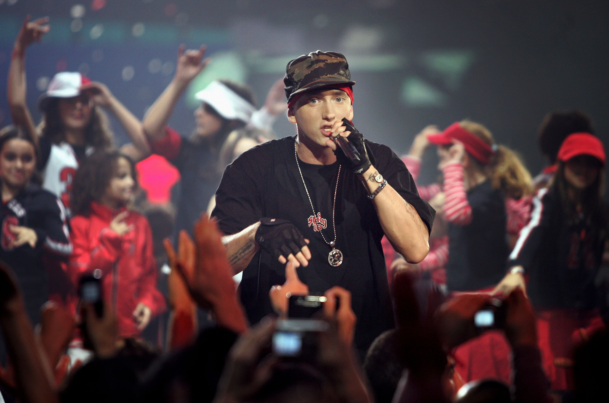

Eminem was raised in Detroit despite being born in St. Joseph, Missouri, where he experienced hardship and difficult family circumstances. In his teenage years, he developed a love for rap music, and in 1996, he put out his debut record.
He released "The Slim Shady LP" in 1999, which was both a commercial and critical success, after attracting Dr. Dre's notice. Despite facing criticism for his use of offensive language and themes, Eminem continued to produce popular albums and work with other musicians. He continues to be one of his generation's most important rap performers.

Marshall Mathers, better known as Eminem, is one of the most well-known and popular hip-hop performers of all time. He has made a significant contribution to the music business with his distinctive rapping style, uncensored lyrics, and contentious themes.
The success of Eminem in the late 1990s and early 2000s helped to dismantle racial barriers in the music business and opened the door for a new generation of white rappers. He has received numerous accolades, sold more than 150 million records globally, and inspired countless musicians and listeners with his music. There is no denying that Eminem has had a significant influence on the music business, and this impact will last for many years to come.
He inspired a generation of musicians and contributed to the development of the style and sound of contemporary rap and hip-hop. Eminem continues to release music and stretch the limits of his artistry despite having reached the height of his commercial success in the early 2000s. In 2020, he published "Music to Be Murdered By - Side B," an album that includes collaborations with a variety of musicians.
In terms of the future, Eminem will probably keep making songs and working with other artists because he is still a significant figure in the music business. Although some people have criticised his controversial lyrics in the past, his influence on popular culture and music is indisputable, and his legacy is certain to last for years to come.
Eminem has received numerous important awards over the years, including the Global Icon Award at the 2013 MTV Europe Music Awards, an Academy Award for Best Original Song, and a total of 15 Grammy Awards. His influence on contemporary culture and music is well known, and he has received numerous accolades and awards for his work in the rap and hip-hop genres. Eminem's capacity to change and adapt his sound over time has cemented his status as a real icon in music history.
